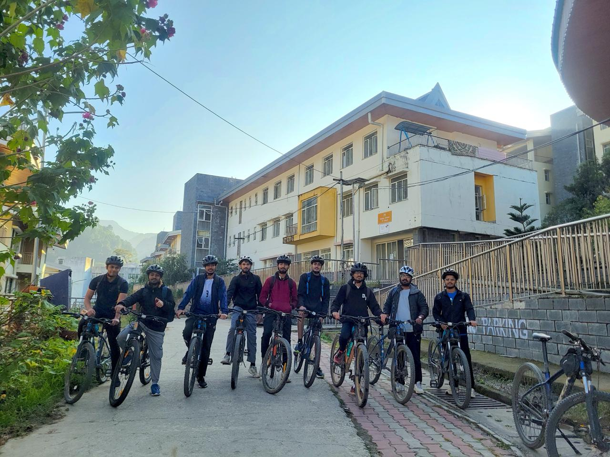
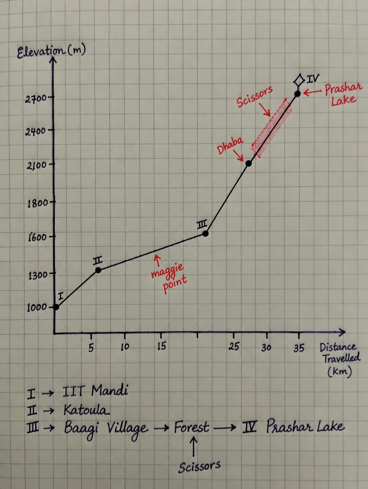
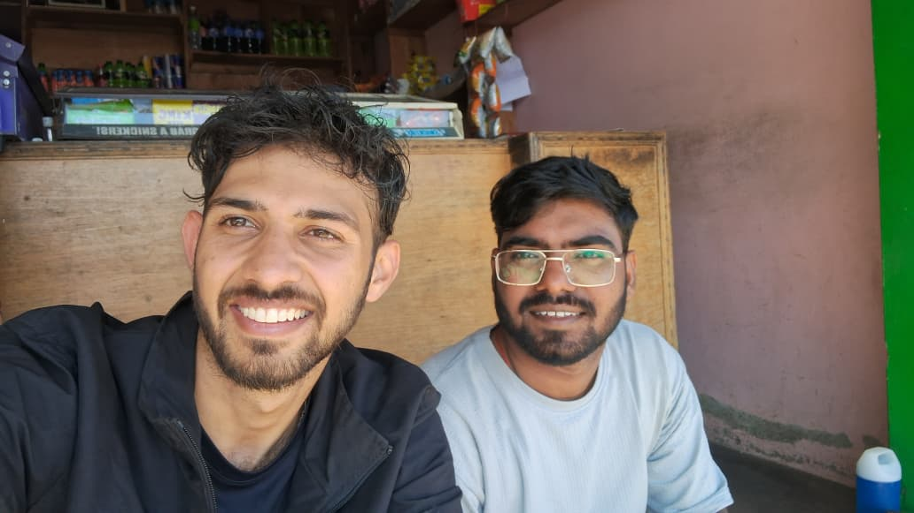
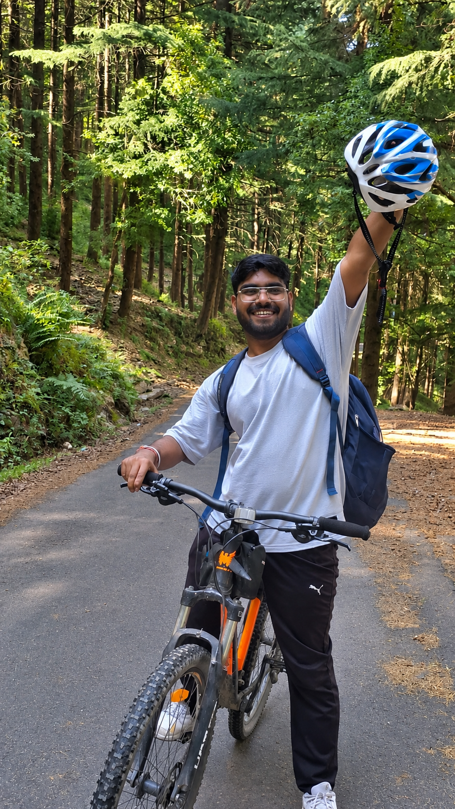
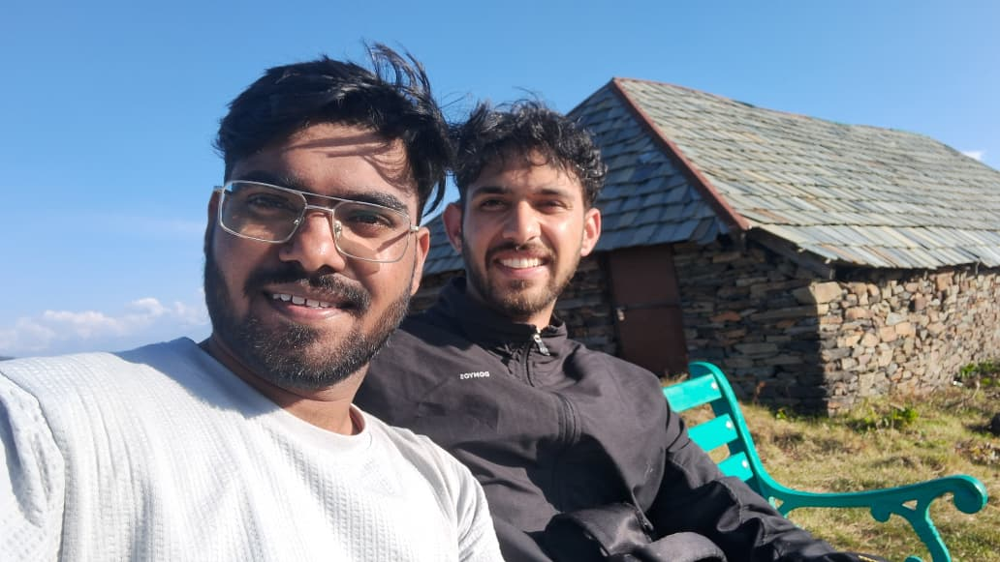
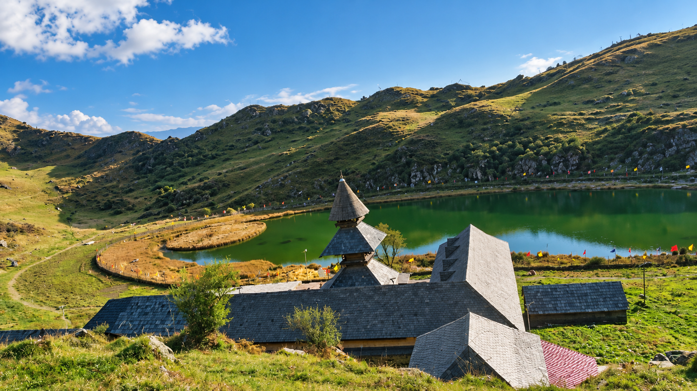

Slow-Mo to Prashar
The Mail
It started with a mail, so I asked Pradeep to join me. Join me for what? What mail?—Going to Prashar via cycles. I just run. He does too. The last time I was on a cycle was when I was, oh, I don’t even remember how old. So, Prashar Lake via cycle. Campus at 4,000 ft and Prashar at 9,000 ft. An elevation gain of 5,000 ft.

The mail said, “Anybody who wants to join a cycle ride to Prashar can take a fitness test. A 5 km run. The first eight people will get cycles from the MTB Club, IIT Mandi, and these eight will complete the summit along with two coordinators.”
Pradeep and I made a deal. We would go only if both of us passed the test. If either of us failed, neither would go.
The next evening, we were called to select our cycles. Out of forty people, we were seventh and eighth.
Next morning, the journey started.
Shared frustration.
Scissors
We didn’t even know how to deal with a small mechanical fault. Eight hours. Distance? Thirty-six kilometres.
Three hours before reaching the destination, some cars and jeeps crossed our path. “Oh, Prashar? You know, guys, it gets steeper up there.” Far away. Very far away. Far away? We were already on the steepest stretch, at least according to us.
Soon, the final road would appear. But no. It simply wasn’t there. Wait. We had to be silent. We had to keep moving, as slowly as we could, for as long as we could. How much longer? Where was that final kenchii (scissor)?

What is a scissor? Just a local term. Scissors. The turn where you ride your cycle up the steepest road, right through the middle of the forest, until you reach the next turn. That turn is called a scissor. And then the steep roads begin again.
Ten scissors. Nine scissors. Eight scissors. Seven scissors. Six scissors. What then? What was the count?
“Why aren’t you speaking?” Pradeep asked me. I had asked him the same question just after one of the scissors, maybe. Silence. No suggestions to each other. No complaints. No pranks. No sarcasm. Silence. Forget the scissors. Silence.
No… Let’s start counting again. Enough of sitting at the end of every scissor. We’ll stop only after covering two kilometres. Before that, no one stops. That’s it. Final.
It worked the first time. And it wasn’t enough. Even a single kilometre made us realise how many m-e-t-e-r-s it had left to offer. We broke the promise. Broken. Physically. Mentally. First time. We sat there. In the middle of the forest. The cycles stood TALL.

Cracking the Code
Alright, so the route was Kamand—Katoula—Baagi—Prashar Lake. We were exhausted even before reaching Baagi. So we stopped on a cliff, ate Maggi, and let the breeze work on our sweat. Pradeep couldn’t believe how I had become that cook. Even I was shocked. We had bananas. Then we left.
I thought, It's my first time, so obviously, I don’t know the technique. But I’ll find one. And I finally cracked the code. I shouted at Pradeep:
“Just pedal as slowly as you can. Don’t rush. Just slow. Suppose you’re in live slow-mo.”
And then we reached Baagi.

Group of Two
Other groups were there too. But Pradeep and I had made our own group of two, pacing according to each other. No competition. No catching up with anyone. Just the two of us.
Now, after Baagi, the trail would get steeper,’ the coordinator told us. But as you know, I’d already cracked the code. It wouldn’t be a problem. We left for Prashar.
The views were scenic. I could sense that the control was mine. I was riding the cycle. I was responsible for whatever it was.
We had no idea how the road kept getting steeper and steeper until the code I had cracked failed we had to stop cycling altogether and start walking, pushing our cycles alongside us.
Three hours later, we ended up at a dhaba. I ordered what you’d expect me to order: an omelette and paneer paranthas. Pradeep and I sat down and ate as much as we could. Reached the top. Same thing ordered. Twice the quantity.

The Descent
Let’s go back. We’re at 9,000 ft. At 4:30, we started descending. The temperature dropped too. Cold. Just cold and darkness.
Not a single light. We reached the campus. Rooms. It’s not tiring now. Let’s see in the morning.
Residues. Longer than we expected.

This is the view from the bench we were sitting on. Prashar has its own charm and colours. One good thing about Prashar is that every time you visit, it shows you different shades. I have been here three times, so I have seen it brown, completely white, and green.
How deep is the lake? No one knows. It is said to be bottomless. No one has been able to measure its depth to this day.
According to the old locals, a massive deodar trunk once fell vertically into the lake and disappeared completely, never to resurface. RESURFACING. I have learnt that whatever has been absorbed has to resurface, one way or another. Emotions, for instance, resurface even after years.
Why can’t we just be a part of nature? Or maybe just nature itself, just an entity. I have no idea. For instance, why can’t I just disappear? Disappear into thin air, without even knowing that I was ever there. All they would know is that somehow, he, or it, had disappeared. They could only see it, observe it, absorb it. It should never resurface.
This way, everyone could just be nature, not separate from it. Even if I disappeared into that bottomless surface, even if I never knew I had disappeared, I would become nature, a part of nature. In the end, I just don’t want to be a separate entity. I just can’t resurface.
The Top
After the last scissor, there was the final ghaati. We knew it was coming. But talking about it? No. The freezing temperature told us something about the elevation numbers.
We were there. We placed the cycles. Destination. The bench, right at the very top. Tops. Highs. Higher than anything else. The sunshine. Like the first warm ray. Silence. Happiness? Don’t know. But we were there.